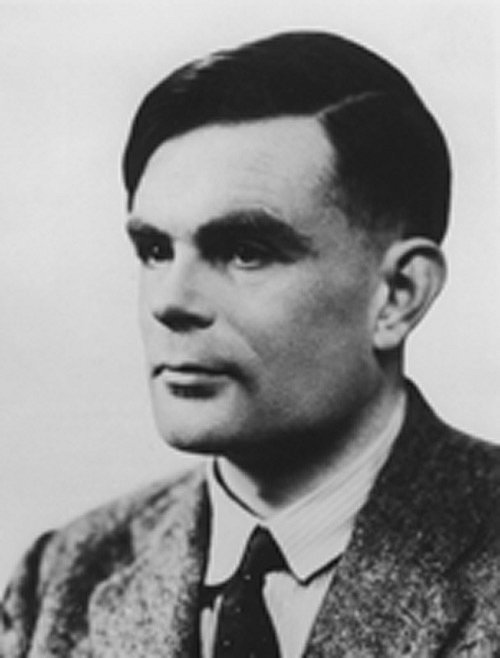

The Turing Test

About Alan Turing

- Born Alan Mathison Turing 23 June 1912 Maida Vale, London, England
- Died 7 June 1954 (aged 41) Wilmslow, Cheshire, England
- Residence Wilmslow, Cheshire, England
- Nationality British
- Fields Mathematics, cryptanalysis, logic, computer science, mathematical and theoretical biology
Alan Mathison Turing was a British mathematician, theoretical biologist, pioneering computer scientist, cryptanalyst and logician.
His developments in computer science were highly influential,
giving us a main idea of algorithm and how to computate with the Turing machine which really resembles an example of a computer with general purpose computer.
Alan Turing is told to be the father of artificial intelligence and theoretical computer science.
Alan Turing worked for the Government Code and Cypher School at Bletchley Park, during WW2, which is considered to be Britain's cryptanalysis center.
During that time he was working on an electromechanical machine that could find settings for the Enigma machine.
He also had specific skills for cracking German ciphers.
Turing's skills were of great importance while breaking intercepted coded messages, which led the Allies to winning lots of fatal engagements against the Nazis,
including the so-called Battle of the Atlantic.
According to assessments his work is the reason for shortening the war Europe with 2 to 4 years.
When the war was ended he became one of the first designers of a stored-program computer with his ACE, which he designed while working at he National Physical Laboratory .
His interest in mathematical biology used to grow and he also inventedthe Manchester computers,
while working at the Max Newman's Computing Laboratory at the University of Manchester.
Alan Turing was pursued for homosexual acts in 1952 because such a conduct was against the law in the UK at this time.
Turing died in 1954 two weeks before his 42nd birthday.
The cause of death was prussiate poisoning. A investigation shown that his death was a suicide,
however it was marked that the known evidence for a suicide is equally consistent with accidental poisoning.
An internet campaign took place in 2009, where the British Prime Minister Gordon Brown apologized for "the appalling way he was treated".
In 2013 Queen Elizabeth II granted him a pardon.